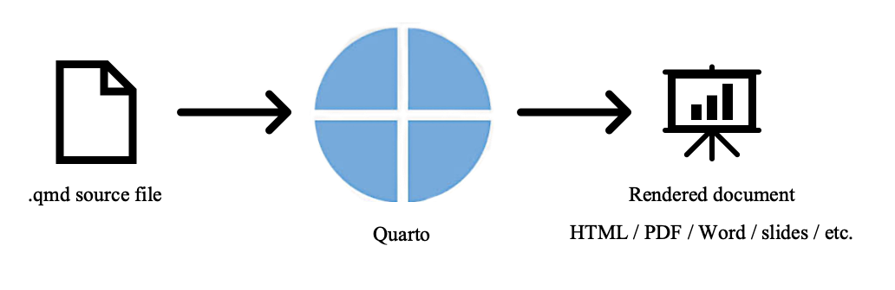
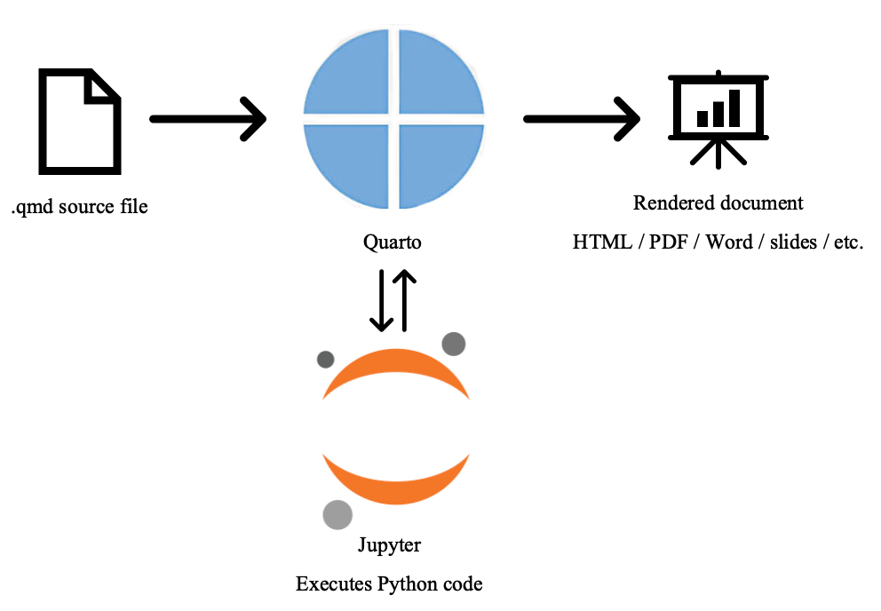
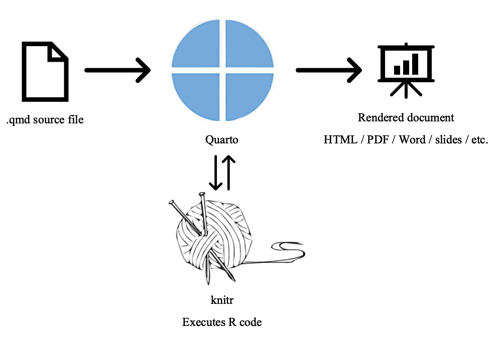
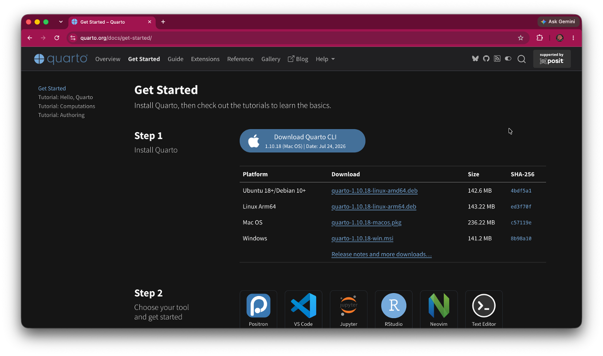
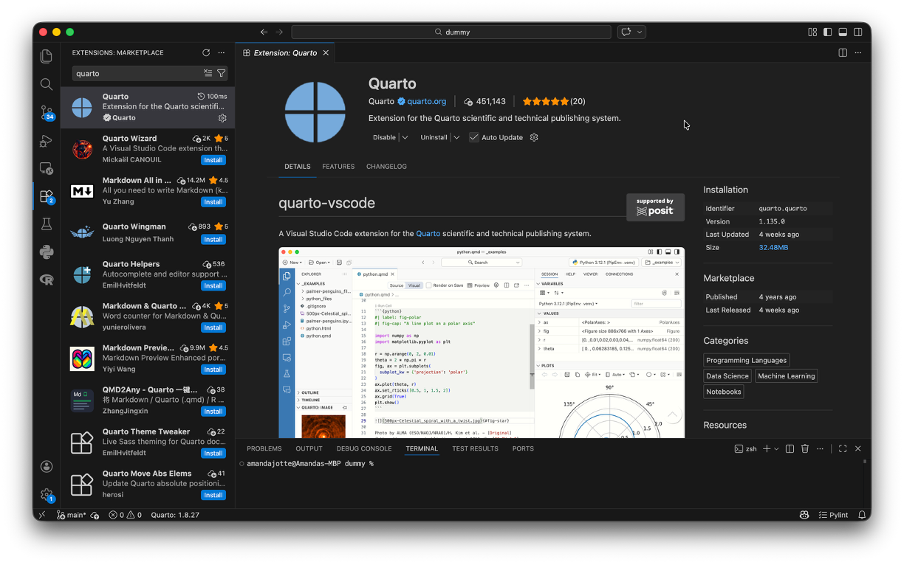

Quarto Installation & Setup Guide
Install Quarto, verify that it works, and connect it to the tools you use
Quarto Installation & Setup Guide
Install Quarto, verify that it works, and connect it to the tools you use
Before You Begin
Quarto is a publishing system that lets you combine text, code, output, figures, and other content into documents such as HTML pages, PDFs, presentations, and reports.
This guide is for you if you:
- are installing Quarto for the first time
- want to check whether Quarto is installed correctly
- want to use Quarto from VS Code
- want to execute Python code through Jupyter
- want to execute R code through knitr
- want to use Quarto from RStudio or
- are seeing errors such as
quarto: command not found.
By the end of this guide, you will be able to:
- install Quarto
- verify that Quarto is available from the command line
- create and render a basic
.qmddocument - understand the difference between Quarto and the editor you use
- connect Quarto to VS Code
- verify a Python + Jupyter workflow
- verify an R + knitr workflow
- work with Quarto from RStudio and
- diagnose several common setup problems.
Before you start
You only need the tools that match the way you plan to use Quarto.
If you are missing one of those tools, install it first or return to that part of this guide later.
What Is Quarto?
Quarto is a publishing system.
It takes a source file, such as a .qmd file, and turns it into a finished document.
A simple mental model is:

Quarto is not the same thing as your editor.
For example:
- VS Code: lets you edit the file
- Quarto: renders the file
If your document contains executable code, another tool may also be involved.
For Python, Jupyter executes the code and Quarto incorporates the results into the final document.

For R, knitr executes the code and Quarto incorporates the results into the final document.

Mental Model
Quarto is the publishing system.
Your editor helps you write the source file.
Jupyter or knitr connects Quarto to the language (Python or R) used to execute your code
Keeping those roles separate makes troubleshooting much easier.
Install Quarto
Open the official Quarto website
Go to:
https://quarto.org/docs/get-started/
Use the official Quarto download links rather than a third-party download site.
Download Quarto
Choose the installer for your operating system.

Install Quarto
Follow the instructions for your operating system below.
macOS
- Download the macOS installer from the official Quarto website.
- Open the installer package.
- Follow the installation steps.
- Complete the installation.
- Close and reopen any terminal windows that were already open.
Windows
- Download the Windows installer from the official Quarto website.
- Open the installer.
- Follow the installation prompts.
- Complete the installation.
- Close and reopen Command Prompt, PowerShell, or the VS Code terminal.
Linux
Follow the installation instructions provided for your Linux distribution on the official Quarto website.
After installation, open a new terminal before testing Quarto.
Verify the Quarto Installation
Do not move on to editor configuration until Quarto itself works.
Open a terminal and run:
quarto --versionA successful result displays a version number.
For example:
1.8.27The exact version number may differ.
The terminal displays a Quarto version number without an error.
Best Practice
Verify Quarto from the command line before configuring VS Code, Jupyter, R, or RStudio.
If quarto --version does not work, the Quarto installation itself needs attention first.
Create a Basic Quarto Document
Let’s test Quarto without adding Python or R yet.
Create a project folder
Create a folder somewhere easy to find.
For example:
quarto-testCreate a Quarto file
Inside the folder, create a file named:
hello-quarto.qmdAdd:
---
title: "My First Quarto Document"
format: html
---
## Hello, Quarto
If you can read this in the rendered document, Quarto is working.Save the file
Save the .qmd file before rendering.
Render the Test Document
Open a terminal in the folder containing hello-quarto.qmd.
Run:
quarto render hello-quarto.qmdQuarto should create an HTML file in the same project area.
You can also use:
quarto preview hello-quarto.qmdPreview is especially useful while editing because Quarto watches the source file and refreshes the rendered output when the document changes.
Quarto creates or previews an HTML document containing:
My First Quarto Document
and
Hello, Quarto
Mental Model
quarto render creates the output.
quarto preview renders the document and keeps watching for changes while you work.
Set Up Quarto for How You Work
The rest of this guide depends on the tools you plan to use.
You do not need every setup below.
| If you will… | Set up… |
|---|---|
| Edit Quarto documents in VS Code | VS Code + Quarto |
| Execute Python code | Python + Jupyter |
| Execute R code | R + knitr |
| Work primarily in RStudio | RStudio + Quarto |
VS Code + Quarto
VS Code and Quarto are separate programs.
There are two pieces:
- Quarto installation: Renders Quarto documents
- Quarto VS Code extension: Adds Quarto support inside VS Code
Installing the extension does not install Quarto itself.
Install the Quarto Extension
Open VS Code.
Open the Extensions panel and search for:
QuartoInstall the official Quarto extension.

Open Your Project Folder
In VS Code, choose:
File → Open Folder
Open your quarto-test folder.
Then open:
hello-quarto.qmdfrom the Explorer.
Best Practice
Open the project folder rather than only opening the .qmd file.
This keeps the terminal, relative paths, images, project files, and Quarto context aligned.
Preview the Document
Use the Preview button in the upper-right area of the editor.

The rendered Quarto document opens in a preview window or browser and updates when you save changes.
Common Mistake
Seeing the Quarto extension in VS Code does not mean Quarto itself is installed.
If Preview fails, check:
quarto --versionbefore reinstalling the extension.
Python + Jupyter + Quarto
If your Quarto documents contain Python code, Quarto commonly uses Jupyter to execute that code.
That introduces another layer: your Python environment.
Quarto can be installed correctly even when Python execution is not configured correctly.
Check Python
In a terminal, run:
python --versionor:
python3 --versionIf neither command works, complete the Python Installation Guide first.
Check Jupyter
Depending on your Python setup, Jupyter may already be available.
You can check with:
jupyter --versionIf Jupyter is not installed in the environment you plan to use, install the required Jupyter packages into that environment.
For many standard Python installations:
python -m pip install jupyteror:
python3 -m pip install jupyterIf you use Anaconda, Jupyter is often already included.
Test Python in Quarto
Create a new file named:
python-test.qmdAdd:
---
title: "Python Test"
format: html
jupyter: python3
---
## Test
::: {.cell}
```{.python .cell-code}
1 + 1
```
::: {.cell-output .cell-output-stdout}
```
2
```
:::
:::Render it with:
quarto render python-test.qmdThe rendered document displays the result:
2Mental Model
If text renders but Python code does not execute, Quarto itself may be working correctly.
The problem may instead involve:
- Python
- Jupyter
- the selected environment or
- a missing package.
R + knitr + Quarto
Quarto can also execute R code.
In a typical R workflow, Quarto uses knitr to execute R code and incorporate the results into the rendered document.
Check R
Open a terminal and run:
R --versionIf R is not installed, install R before continuing.
Check knitr
Open R and run:
packageVersion("knitr")If knitr is not installed, install it with:
install.packages("knitr")Test R in Quarto
Create:
r-test.qmdAdd:
---
title: "R Test"
format: html
---
## Test
::: {.cell}
```{.r .cell-code}
1 + 1
```
::: {.cell-output .cell-output-stdout}
```
[1] 2
```
:::
:::Render the document:
quarto render r-test.qmdThe rendered document displays the result:
2Mental Model
Remember, for an R document:
- Quarto: controls publishing
- knitr: executes the R code
- R: performs the computation
RStudio + Quarto
If you primarily work in RStudio, you can author and render Quarto documents there.
Recent versions of RStudio include Quarto support, but Quarto itself still needs to be available.
Check Quarto from RStudio
Open RStudio.
Create or open a .qmd file.
You should see Quarto-specific rendering or preview controls.
You can also verify Quarto from the RStudio Terminal:
quarto --versionTest a Quarto Document
Open the r-test.qmd file you created earlier.
Use the Render button in RStudio.
RStudio renders the Quarto document and displays the finished output.
Common Mistake
RStudio, R, knitr, and Quarto are related but separate pieces.
Installing RStudio does not guarantee that every Quarto or R dependency is configured correctly.
Common Problems
quarto: command not found
Quarto is either not installed or your terminal cannot find the installation.
Check
Run:
quarto --versionin a new terminal window.
Fix
- Confirm that Quarto was installed successfully.
- Close and reopen the terminal.
- Restart VS Code or RStudio if they were open during installation.
- Reinstall Quarto only if the installation itself appears incomplete.
VS Code does not recognize my .qmd file
Check the filename and the Quarto extension.
Confirm that:
- the file ends in
.qmd - the Quarto VS Code extension is installed and enabled
- VS Code has been restarted since the extension was installed.
Do not reinstall Quarto until you have confirmed that quarto --version works.
The Quarto extension is installed, but Preview still fails
The VS Code extension may be working while Quarto itself is missing or unavailable.
Open the VS Code terminal and run:
quarto --versionIf that command fails, troubleshoot the Quarto installation first.
My document renders, but the Python code fails
Quarto may be working correctly while your Python or Jupyter environment is not.
Check:
- Which Python environment are you using?
- Does Python work in the terminal?
- Is Jupyter installed in that environment?
- Are the required Python packages installed in that environment?
Try:
python --versionand:
jupyter --versionMy document renders, but the R code fails
Check R and knitr before troubleshooting Quarto itself.
In R, run:
packageVersion("knitr")If needed:
install.packages("knitr")Also confirm that R is installed and available to the environment you are using.
Quarto reports a YAML error
Read the location in the error message before changing anything else.
YAML is sensitive to:
- indentation
- colons
- quotation marks
- invalid field names and
- incorrect nesting.
A Quarto document can fail to render even when Quarto itself is installed correctly.
The error usually identifies the file and approximate line where the problem occurred.
Quarto Preview does not open
First determine whether rendering failed or whether only the preview window failed to open.
Run:
quarto render your-file.qmdIf rendering succeeds, Quarto itself is working.
Then try:
quarto preview your-file.qmdand check the terminal output for the local preview address or additional errors.
Markdown files open with Quarto Preview instead of the normal Markdown preview
VS Code may be associating the preview action with the Quarto extension.
For ordinary .md files, use VS Code’s Markdown preview commands when you want the standard Markdown preview.
For .qmd files, use Quarto Preview.
Something worked before, but now it does not render
Before reinstalling Quarto, identify which part of the workflow changed.
Check:
- Does
quarto --versionstill work? - Does a simple text-only
.qmdrender? - Is the error coming from Quarto, Python, Jupyter, R, knitr, or an extension?
- Did you change Python or R environments?
- Did you add or change YAML?
- Did you move project files or images?
- Did an extension update or become disabled?
Reinstalling Quarto should usually come after these checks.
Best Practices
- Verify Quarto from the terminal before troubleshooting editor integrations.
- Open the project folder rather than only an individual
.qmdfile. - Keep related source files, images, and supporting files together in a project folder.
- Save the source file before troubleshooting unexpected output.
- Read the first meaningful render error rather than only the last line of a long error message.
- Distinguish Quarto errors from Python, Jupyter, R, knitr, or editor-extension errors.
- Use
quarto renderwhen you want a finished output. - Use
quarto previewwhile actively editing. - Test a minimal document when a larger project stops working.
- Avoid reinstalling software before identifying which component is actually failing.
Next Steps
Your Quarto installation is now ready.
The next guide, Getting Started with Quarto, can focus on actually authoring documents, including:
- YAML front matter
- Markdown
- headings
- links and images
- code chunks
- Python and R execution
- chunk options
- figures and tables
- HTML and PDF output
- Quarto projects and
- the basic authoring workflow.
You do not need to learn every Quarto feature at once. Start with the document format and language you actually plan to use.
Verify Your Setup
You only need to verify the workflows you plan to use.
Core Quarto Setup
Optional Workflows